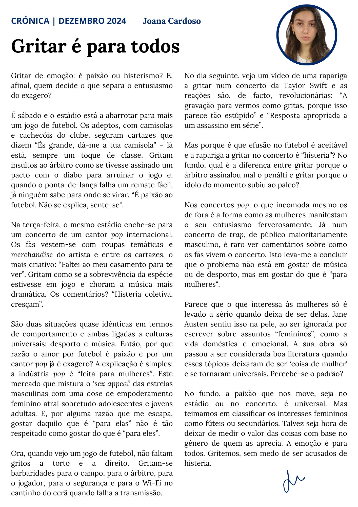

Gritar é para todos
Por Joana Araújo Cardoso
Gritar de emoção: é paixão ou histerismo? E, afinal, quem decide o que separa o entusiasmo do exagero?
É sábado e o estádio está a abarrotar para mais um jogo de futebol. Os adeptos, com camisolas e cachecóis do clube, seguram cartazes que dizem “És grande, dá-me a tua camisola” – lá está, sempre um toque de classe. Gritam insultos ao árbitro como se tivesse assinado um pacto com o diabo para arruinar o jogo e, quando o ponta-de-lança falha um remate fácil, já ninguém sabe para onde se virar. “É paixão ao futebol. Não se explica, sente-se".
Na terça-feira, o mesmo estádio enche-se para um concerto de um cantor pop internacional. Os fãs vestem-se com roupas temáticas e merchandise do artista e entre os cartazes, o mais criativo: “Faltei ao meu casamento para te ver”. Gritam como se a sobrevivência da espécie estivesse em jogo e choram a música mais dramática. Os comentários? “Histeria coletiva, cresçam”.
São duas situações quase idênticas em termos de comportamento e ambas ligadas a culturas universais: desporto e música. Então, por que razão amor por futebol é paixão e por um cantor pop já é exagero? A explicação é simples: a indústria pop é “feita para mulheres”. Este mercado que mistura o ‘sex appeal’ das estrelas masculinas com uma dose de empoderamento feminino atrai sobretudo adolescentes e jovens adultas. E, por alguma razão que me escapa, gostar daquilo que é “para elas” não é tão respeitado como gostar do que é “para eles”.
Ora, quando vejo um jogo de futebol, não faltam gritos a torto e a direito. Gritam-se barbaridades para o campo, para o árbitro, para o jogador, para o segurança e para o Wi-Fi no cantinho do ecrã quando falha a transmissão. No dia seguinte, vejo um vídeo de uma rapariga a gritar num concerto da Taylor Swift e as reações são, de facto, revolucionárias: “A gravação para vermos como gritas, porque isso parece tão estúpido” e “Resposta apropriada a um assassino em série”.
Mas porque é que efusão no futebol é aceitável e a rapariga a gritar no concerto é “histeria”? No fundo, qual é a diferença entre gritar porque o árbitro assinalou mal o penálti e gritar porque o ídolo do momento subiu ao palco?
Nos concertos pop, o que incomoda mesmo os de fora é a forma como as mulheres manifestam o seu entusiasmo ferverosamente. Já num concerto de trap, de público maioritariamente masculino, é raro ver comentários sobre como os fãs vivem o concerto. Isto leva-me a concluir que o problema não está em gostar de música ou de desporto, mas em gostar do que é “para mulheres".
Parece que o que interessa às mulheres só é levado a sério quando deixa de ser delas. Jane Austen sentiu isso na pele, ao ser ignorada por escrever sobre assuntos “femininos”, como a vida doméstica e emocional. A sua obra só passou a ser considerada boa literatura quando esses tópicos deixaram de ser ‘coisa de mulher’ e se tornaram universais. Percebe-se o padrão?
No fundo, a paixão que nos move, seja no estádio ou no concerto, é universal. Mas teimamos em classificar os interesses femininos como fúteis ou secundários. Talvez seja hora de deixar de medir o valor das coisas com base no género de quem as aprecia. A emoção é para todos. Gritemos, sem medo de ser acusados de histeria.
